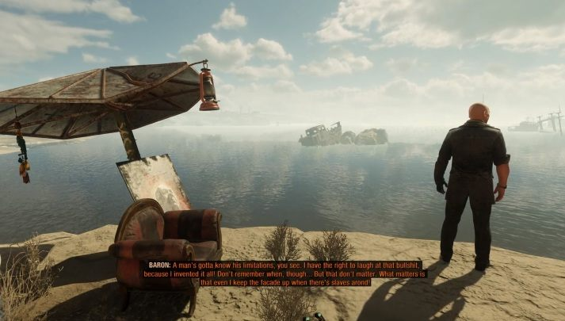

Гайд - Где найти настоящего Барона в Metro Exodus
На локации «Каспий» в Metro Exodus нужно будет уничтожить Барона. Есть одна небольшая проблема — в этом месте можно найти два Барона! Один из них — настоящий, а другой — самозванец. Разберемся, как найти настоящего барона.

Барон находится в восточной части карты — его местоположение отмечено на картинке выше. Поговорите с человеком, найденным в этом месте. Он расскажет вам свою историю и сообщит, что нынешний барон — самозванец.

Барон расскажет вам о своих планах и других интересных вещах. После этого он будет ждать, пока вы примете решение. Вы можете убить его или оставить в покое. Он не будет защищать себя.
Убийство настоящего Барона не повлияет на сюжет или окончание этой главы. Если оставить его в покое, то судьба Дамира не изменится. Кроме того, убийство настоящего Барона не изменит вашу карму — игра не засчитает это убийство.
Единственная разница в том, что вы можете услышать другой отчет с Каспийского моря (при использовании радио в Авроре). Например, если оставить в покое настоящего Барона, то это можно будет заметить в отчете.
Помните — убийство настоящего Барона не повлияет на историю.
Данная статья была взята с сайта vgtimes.ru